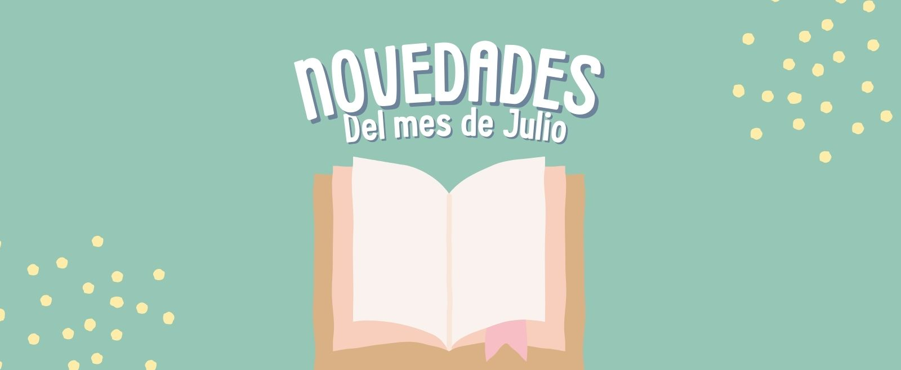
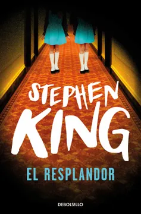

Novedades de Julio🎉

Por el mes de Julio, hemos seleccionado nuevas y emocionantes historias que merecen ser leídas. Ya sea que estés buscando la próxima gran novela , descubrir la obra de un autor emergente, o mantenerte al tanto de las novedades en tus géneros favoritos, aquí encontrarás lo más destacado de los lanzamientos editoriales recientes.
El resplandor

Jack Torrance, un escritor en apuros y exalcohólico, acepta un trabajo como cuidador de invierno en el aislado Hotel Overlook, llevándose a su esposa Wendy y su hijo Danny. Danny tiene un "don" psíquico llamado "el resplandor", que le permite ver las aterradoras presencias que habitan el hotel. Mientras el invierno avanza, Jack comienza a perder la cordura, influenciado por las fuerzas sobrenaturales del hotel, poniendo en peligro la vida de su familia. La novela explora temas de locura, aislamiento y los horrores internos que pueden desatarse en situaciones extremas.
calendar_today
Disponible el 4 de julio
La magia del orden
Marie Kondo, experta en organización, presenta el método KonMari, una forma revolucionaria de ordenar y deshacerse de lo innecesario en casa y en la vida. El enfoque se basa en conservar solo aquellos objetos que "despierten alegría" y deshacerse de lo que no lo haga, ayudando a crear espacios organizados y armoniosos. Kondo también toca la importancia emocional del orden, mostrando cómo vivir en un entorno organizado puede generar bienestar y claridad mental.
calendar_today
Disponible el 10 de julio
El hombre en busca de sentido
Viktor Frankl, psiquiatra y sobreviviente del Holocausto, relata sus experiencias en los campos de concentración nazis, ofreciendo una profunda reflexión sobre la capacidad humana de encontrar sentido en medio del sufrimiento. Frankl desarrolla la logoterapia, una rama de la psicoterapia que sostiene que el principal motor del ser humano es la búsqueda de sentido en la vida. La obra mezcla sus vivencias personales con observaciones filosóficas sobre la resiliencia y la condición humana.
calendar_today
Disponible el 20 de julio
La casa de los espíritus
Esta novela sigue la historia de la familia Trueba a lo largo de varias generaciones, mezclando elementos de lo sobrenatural y lo real. La narrativa gira en torno a Esteban Trueba, un terrateniente patriarcal, y las mujeres de su familia, quienes poseen habilidades psíquicas. A través de una rica mezcla de política, amor, traición y lo mágico, Allende explora la historia de Chile y los efectos de los cambios políticos y sociales en el país. Es una saga familiar que entrelaza lo personal con lo histórico, con un fuerte enfoque en el realismo mágico.
calendar_today
Disponible el 22 de julio